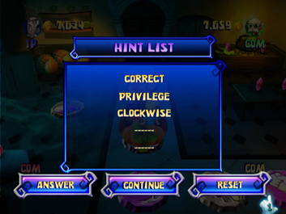
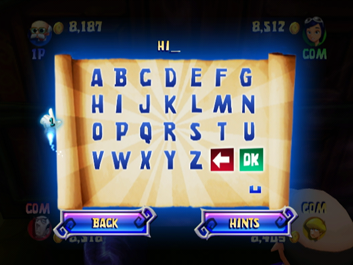

12 |
Hints, Scrolls and Final Run |
 |
Buy Scroll Screen Whenever the car passes a Scroll cell on the board, you can choose to buy a magic scroll. If you buy a scroll, the scroll will be opened and provide a clue. If you don’t buy the scroll, the location of the next magic scroll will be revealed and the car will continue to move ahead. Each scroll you buy is more expensive than the last one: Easy mode
Normal mode
Hard mode
New Clue Screen You can access this screen and see a new clue after buying a scroll. Hint List Screen  This screen follows the New Clue screen. You can see all the clues you have collected already and choose to attempt an answer for the correct password, continue with the game, or reset the clues and password and continue. It will cost 200 coins to reset, but watch out, if you do not have enough coins, you will not be able to reset: you can guess an answer or continue playing to gather more money! Password Input Screen  If you select Answer from the Hint List screen, you will enter the Password Input screen. You can choose to input the password or return to the board to continue the game. Select Hints to view your clues. Wrong Password Screen If you input the wrong password, the location of the next magic scroll will be revealed and you will be penalized 200 coins. But if you already have 5 scrolls, you must try entering the password again or choose to reset all the clues and the password (which will cost 200 coins). Congratulations Screen If you input the right password, the Congratulations screen will appear. After this screen, there is one last mini-game. Final Run After getting the treasure, the four players must play the last mini-game, Final Run, which is similar to the Run Run Run mini-game (see the Mini-Game Mode section for more details). They are both played with the Wii Remote held horizontally, and the player can press the 2 Button for a spin attack. There are, however, some key differences between the two mini-games, one of which is the game map. Other important aspects of Final Run that differentiate it from Run Run Run: 1) if a ghost touches a player, he/she will lose some coins but will not be eliminated; 2) knights will attack the players, making the players drop some coins if they are hit; 3) players’ starting scores for this mini-game will be the total amount of money they accumulated in the game so far. |
 |
 |
 |